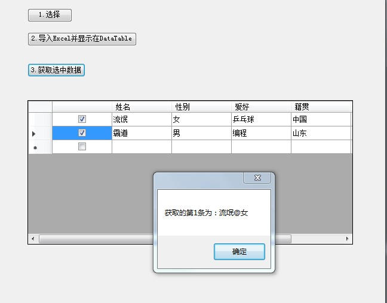

原文出处:本文由博客园博主霸道流氓提供。
原文连接:https://www.cnblogs.com/badaoliumangqizhi/p/11420986.html
原文连接:https://www.cnblogs.com/badaoliumangqizhi/p/11420986.html
场景
使用NPOI导入Excel并赋值给DataTable,然后显示在DataGrdView上，并且添加多选框，然后获取选中行的内容。
Winform中使用NPOI实现Excel导入并赋值给DataTable：
https://blog.csdn.net/BADAO_LIUMANG_QIZHI/article/details/100064821
效果

实现
在上面已经导入成功并且赋值给DataTables上的基础上，在DataGridView上添加多选框。
下面代码加在第二个按钮的点击事件里，生成数据源dataTable的标题使添加一个多选列。
DataGridViewColumn checkCol = new DataGridViewCheckBoxColumn();
this.dataGridView1.Columns.Add(checkCol);
然后在第三个按钮的点击事件里
private void button4_Click(object sender, EventArgs e)
{
int strCount = 0;
//首先进行第一次循环 获取选中的行数
for (int i = 0; i <dataGridView1.Rows.Count; i++)
{
//如果被选中
if ((bool)dataGridView1.Rows[i].Cells[0].EditedFormattedValue == true)
{
strCount++;
}
}
//新建 选中长度的数组存放每一行
string[] str = new string[strCount];
for (int i = 0; i < dataGridView1.Rows.Count; i++)
{
if ((bool)dataGridView1.Rows[i].Cells[0].EditedFormattedValue == true)
{
//获取当前行的第一个单元格 + @ +第二个单元格的内容
str[i] = dataGridView1.Rows[i].Cells[1].Value.ToString() + "@" + dataGridView1.Rows[i].Cells[2].Value.ToString();
}
}
//输出选中所有行的内容
for (int i = 0; i < str.Length; i++)
{
MessageBox.Show(string.Format("获取的第{0}条为：",i+1) +str[i]);
}
}
示例代码下载
https://download.csdn.net/download/badao_liumang_qizhi/11612423